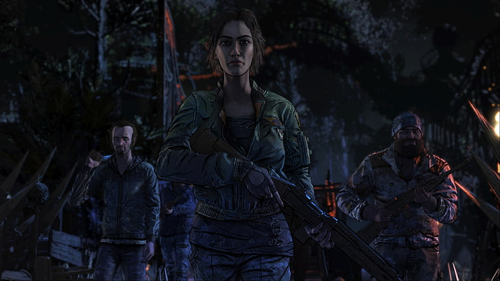
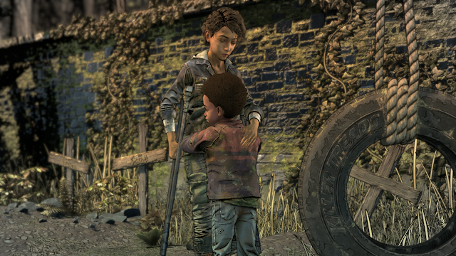

As lições de Lee e o amadurecimento de Clementine

Na quarta e última temporada voltamos a controlar Clementine, agora já crescida ela tem como principal responsabilidade cuidar de AJ. AJ é o grande ponto alto desta temporada, ele é totalmente ligado a Clementine, algo que já vimos e sentimos lá na primeira temporada com a relação de Clementine e Lee. Essa, de longe, é a melhor temporada da saga, aqui temos uma Clementine consciente de seus atos, um AJ astuto e sempre disposto a ouvir o que Clementine tem a dizer, e é difícil não se encantar com a relação dos dois, AJ é bem mais adição do que distração, e ele é realmente um personagem incrível.Temos aqui uma Clementine cansada de ficar andando e correndo perigo, ela e AJ querem um lar para chamar de seu. Eles estão tendo um dia como todos os outros, em busca de comida, até que encontram uma casa, mas após uma explosão de granada os zumbis aparecem e eles têm de fugir, este início é bem frenético e empolgante, um acidente acontece e AJ e Clementine são resgatados por Marlon. Marlon os leva até uma escola onde só vivem crianças sobreviventes, nesta escola vemos um pouco da criança que AJ é, ele escuta bastante Clementine, e você como jogador terá a tarefa de moldar o caráter dele. Todas as crianças ali deste grupo são importantes. Marlon é o líder, Louis é o palhaço tagarela sempre querendo fazer os amigos rirem, Violet é uma garota tímida e fria mas que com o tempo ganha sua confiança conforme suas escolhas, Mitch é o valentão, Tennessee é um garoto ingênuo, Brody é uma garota que pouco conhecemos, Willy é um garoto tímido mas engenhoso, Ruby é uma garota que de primeira parece ser durona mas na real é doce, Aasim é um garoto inteligente e Omar é o cozinheiro do grupo.
Marlon sempre tenta te passar a sensação de que o lugar é totalmente seguro, ele aceita a ajuda de Clementine e AJ para procurarem comida com os outros integrantes, com a escassez Clementine acaba sugerindo de irem até a casa em que ela foi encontrada por Marlon, pois lá ela tinha bastante comida, o grupo acaba aceitando e eles vão. Quando tudo está dando certo um homem estranho, de nome Abel, acaba encontrando Clementine e AJ, e ali se tem um embate entre os dois, Clementine e AJ conseguem fugir com a comida, e quando chegam na escola contam o ocorrido, Brody fica nervosa com a situação e discute com Clementine. Na mesma noite Clementine e AJ escutam uma discussão, e Clementine descobre que é entre Brody e Marlon, pois Marlon entregou as duas irmãs de Tennessee em troca de que o grupo de Abel não os procurassem novamente, isso acaba desencadeando na morte de Brody pelas mãos de Marlon.


Após a morte de Marlon as crianças decidem fazer uma votação que acaba resultando na expulsão de Clementine e AJ, quando eles estão indo embora eles são surpreendidos por Abel e mais uma pessoa, que acaba revelando ser Lilly, que conseguiu escapar lá na primeira temporada, ela acaba atirando em AJ, e Clementine então é salva por James, um garoto que antes fazia parte do grupo dos Sussurradores, ele não mata zumbis, pois vê algo bom neles, e consegue se misturar usando uma máscara de zumbis. Clementine consegue provar que não teve culpa pela morte de Brody e Marlon é confrontado pelas outras crianças, AJ vendo aquela situação acaba matando Marlon e todas as crianças o veem como um perigo, isso acaba deixando o AJ bem vulnerável, pois ele se sente um assassino, e quer muito se redimir pelo seu erro.
Lilly é a grande vilã desta temporada, ela quer recrutar as crianças a força para o seu exército, mas as crianças acabam armando um plano para não serem capturados. Quando Lilly e seu grupo atacam a escola das crianças algumas delas acabam sendo levadas, e nisso eles planejam um ataque ao barco do grupo de Lilly, para recuperarem as crianças que foram levadas, e acabam conseguindo a ajuda de James. O ataque acontece e muitos rumos do fim deste ataque se deve às escolhas do jogador, aí já temos também o final da temporada, pois ela mostra a evolução de AJ, mediante das suas decisões, e também o fim de Clementine.


Inclusive vale mencionar o sonho onde Clementine se encontra com Lee, é emocionante a forma como o diálogo acontece ali, Clementine cresceu e Lee morreu, e você fica com aquela saudade de quando ele era o mentor e protetor dela, e acaba enxergando o tamanho da jornada que ela encarou e a evolução dela como personagem. Simplesmente um grande presente para todos aqueles que a acompanharam do início ao fim.